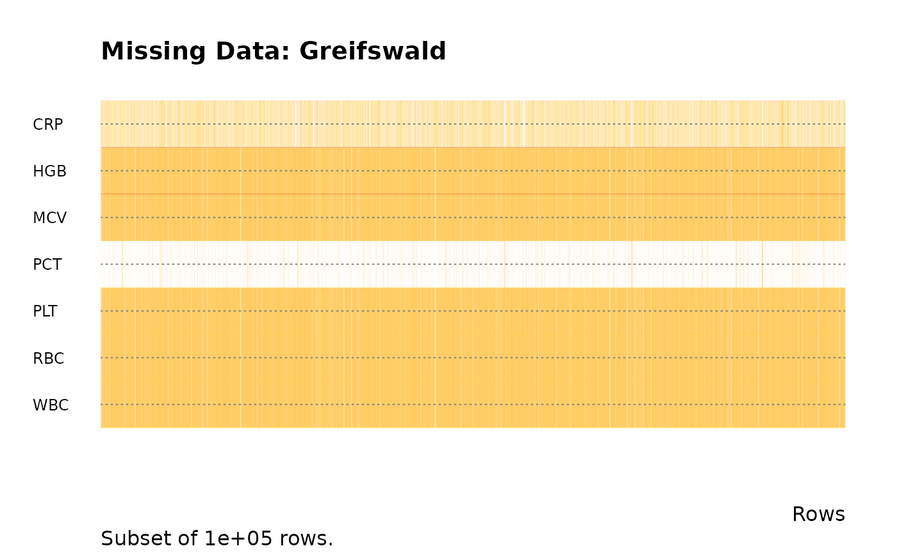
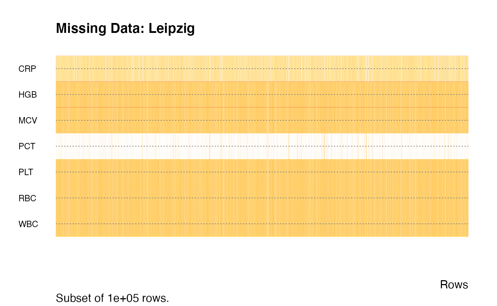
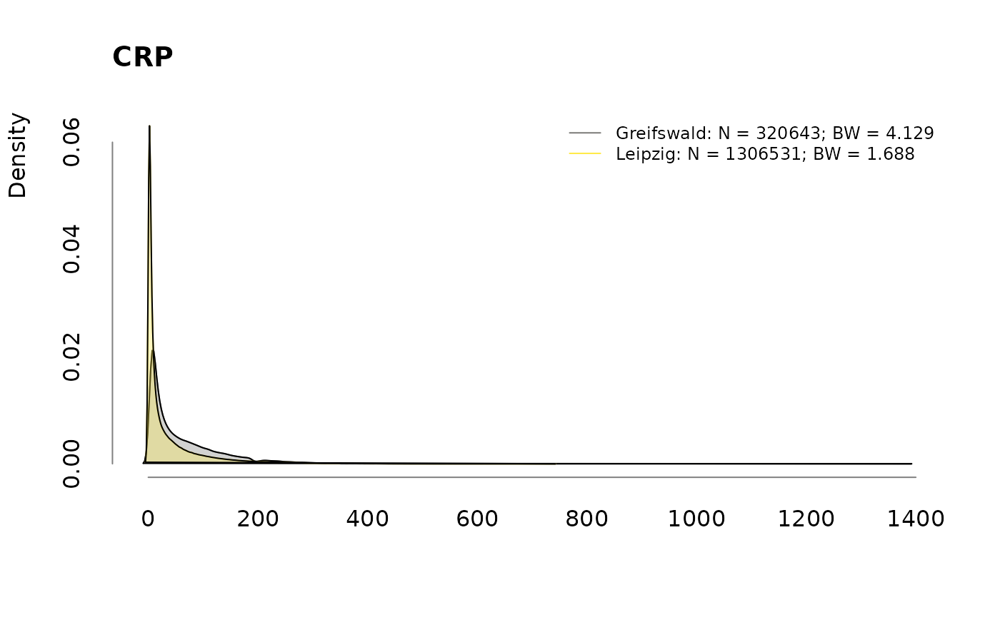
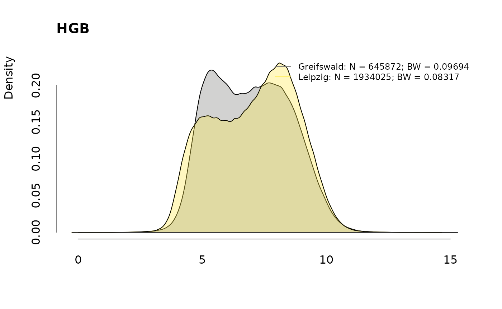
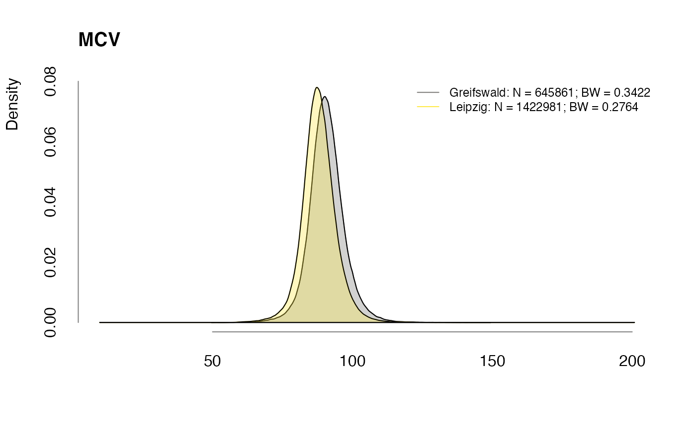
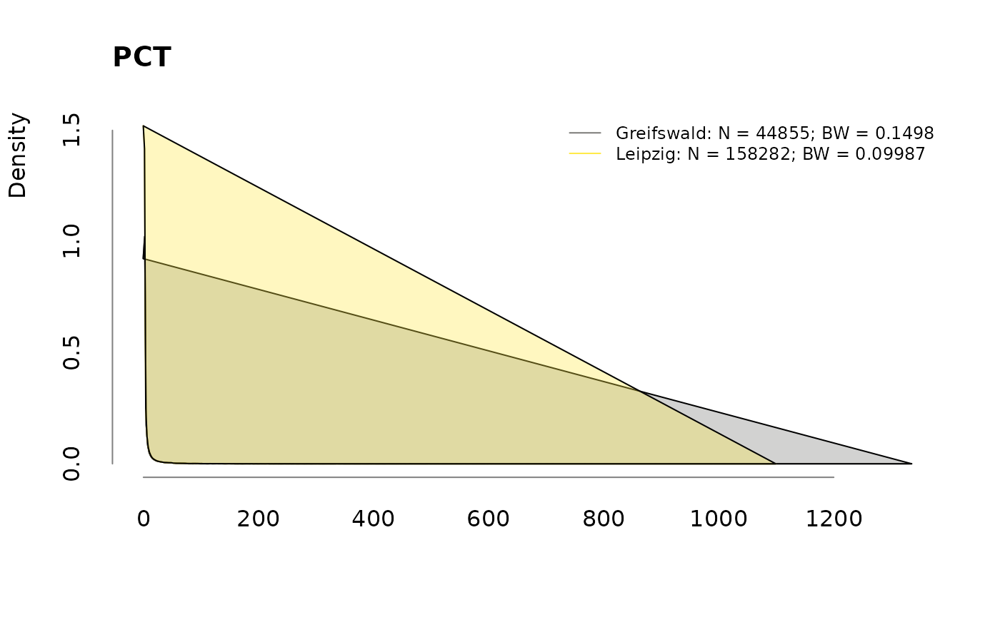
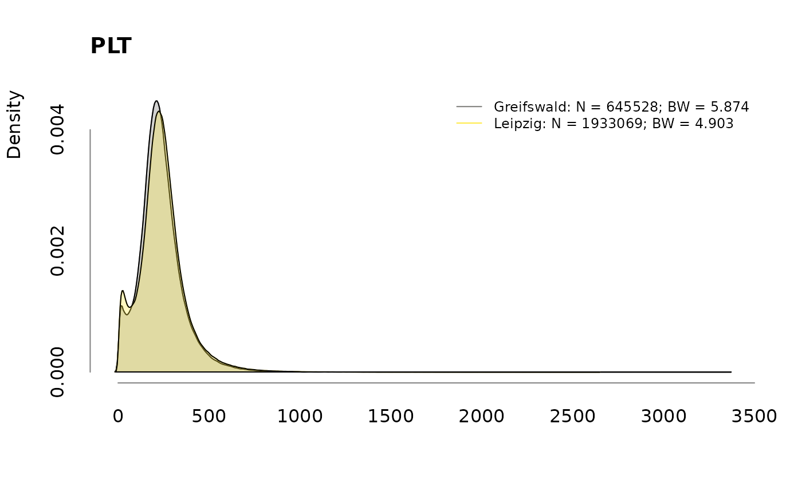
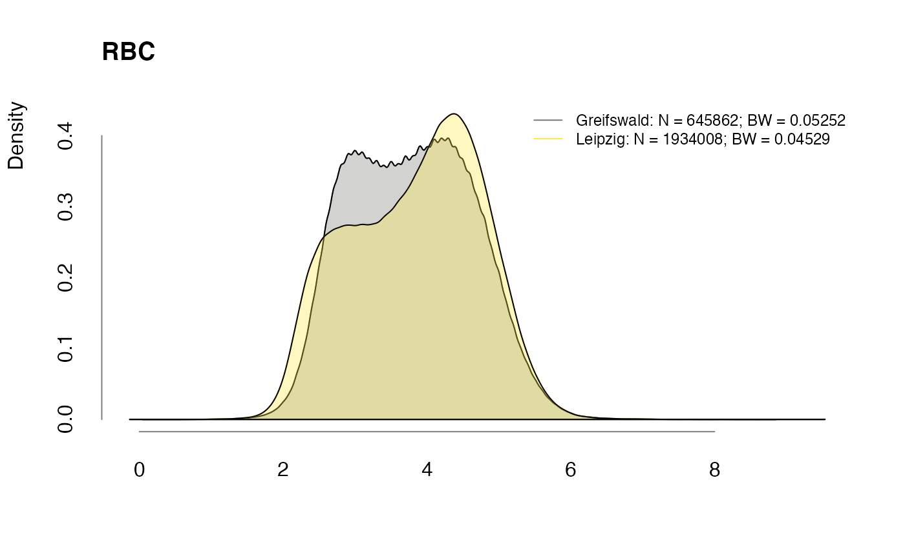
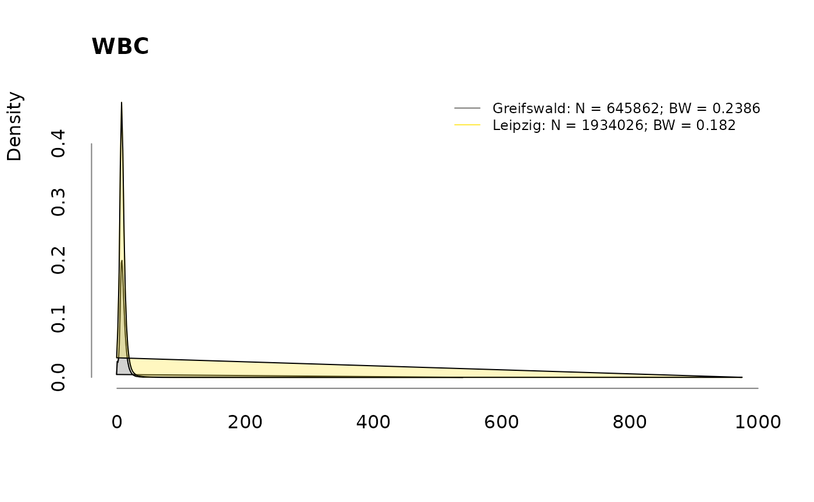

Authors: Sebastian Gibb [aut, cre], Paul Ahrens [aut, dtc], Daniel Steinbach [aut, dtc], Maria Schmidt [aut, dtc], Thorsten Kaiser [aut, dtc], Mark Wernsdorfer [dtc], Matthias Nauck [dtc], Stefan Bollmann [dtc], Thomas Hildebrandt [dtc]
Last modified: 2022-04-15 14:48:32
Compiled: Fri Apr 15 14:50:26 2022
The data were collected as part of the AMPEL project (Analysis and Reporting System for the Improvement of Patient Safety through Real-Time Integration of Laboratory Findings, ). They include administration data, sepsis labels based on ICD10 codes and laboratory diagnostics from patients admitted to the University Hospital Leipzig between Januar 2014 and December 2019 and to the University Hospital Greifswald between Januar 2015 and December 2020, respectively. Additionally it provides functions to generate a similar dataset from MIMIC-IV (Johnson et al. 2021).
You can install the released version of sbcdata from directly from github:
# install.packages("remotes")
remotes::install_github("ampel-leipzig/sbcdata")The datasets are available under the CC-BY license.
To cite the sbcdata package, please use:
citation("sbcdata")##
## To cite package 'sbcdata' in publications use:
##
## Sebastian Gibb, Paul Ahrens, Daniel Steinbach, Maria Schmidt and
## Thorsten Kaiser (2022). sbcdata: Laboratory Diagnostics from Septic
## and Non-septic Patients Used in the AMPEL Project. R package version
## 0.0.6. https://github.com/ampel-leipzig/sbcdata
##
## A BibTeX entry for LaTeX users is
##
## @Manual{,
## title = {sbcdata: Laboratory Diagnostics from Septic and Non-septic Patients Used
## in the AMPEL Project},
## author = {Sebastian Gibb and Paul Ahrens and Daniel Steinbach and Maria Schmidt and Thorsten Kaiser},
## year = {2022},
## note = {R package version 0.0.6},
## url = {https://github.com/ampel-leipzig/sbcdata},
## }sbcdata package
The sbcdata dataset contains ncol(sbcdata) variables for nrow(sbcdata) laboratory diagnostics.
str(sbcdata)## Classes 'data.table' and 'data.frame': 2714612 obs. of 18 variables:
## $ Id : int 1 2 3 3 3 3 3 3 3 3 ...
## $ Age : int 25 75 77 77 77 77 77 77 77 77 ...
## $ Sex : chr "W" "M" "W" "W" ...
## $ Diagnosis: chr "Control" "Control" "SIRS" "SIRS" ...
## $ Center : chr "Greifswald" "Greifswald" "Greifswald" "Greifswald" ...
## $ Set : chr "Validation" "Validation" "Validation" "Validation" ...
## $ Sender : chr "AMB" "GEN" "OTHER" "OTHER" ...
## $ Episode : int 1 1 1 1 1 1 1 1 1 1 ...
## $ Time : num 0 0 0 318840 578640 ...
## $ TargetIcu: chr NA NA NA NA ...
## $ SecToIcu : num NA NA NA NA NA NA NA NA NA NA ...
## $ CRP : num 15.5 7.4 96.1 57 93.4 74.3 51.7 27 48 95.7 ...
## $ HGB : num 7 8.4 4.8 4.4 5.7 5.7 5.8 5.6 6.2 5.9 ...
## $ MCV : num 80.5 87.9 81.7 82.2 82 81.7 85.1 84.7 85.6 83.3 ...
## $ PCT : num NA NA NA NA 0.22 NA NA NA NA 0.35 ...
## $ PLT : int 264 260 385 416 437 439 391 311 333 285 ...
## $ RBC : num 4.2 4.8 3 2.8 3.5 3.5 3.4 3.3 3.8 3.5 ...
## $ WBC : num 8.4 8.47 13.2 14.2 13.8 10.9 9.65 8.98 8.77 8.85 ...
## - attr(*, ".internal.selfref")=<externalptr>
centers <- c("Greifswald", "Leipzig")
labs <- sbcdata[, labcodes$Code, with = FALSE]
labs <- as.matrix(labs)
labsna <- is.na(labs)
mode(labsna) <- "numeric"
nna <- rowsum(labsna, group = sbcdata$Center)
nna <- rbind(nna, Total = colSums(nna))
knitr::kable(t(nna), caption = "Missing Data")| Greifswald | Leipzig | Total | |
|---|---|---|---|
| CRP | 346014 | 741424 | 1087438 |
| HGB | 20785 | 113930 | 134715 |
| MCV | 20796 | 113952 | 134748 |
| PCT | 621802 | 1889673 | 2511475 |
| PLT | 21129 | 114886 | 136015 |
| RBC | 20795 | 113947 | 134742 |
| WBC | 20795 | 113929 | 134724 |
pna <- round(nna / c(table(sbcdata$Center), nrow(sbcdata)) * 100, 2)
knitr::kable(t(pna), caption = "Missing Data [%]")| Greifswald | Leipzig | Total | |
|---|---|---|---|
| CRP | 51.90 | 36.20 | 40.06 |
| HGB | 3.12 | 5.56 | 4.96 |
| MCV | 3.12 | 5.56 | 4.96 |
| PCT | 93.27 | 92.27 | 92.52 |
| PLT | 3.17 | 5.61 | 5.01 |
| RBC | 3.12 | 5.56 | 4.96 |
| WBC | 3.12 | 5.56 | 4.96 |

.plotdens <- function(l, main,
col = viridisLite::cividis(length(l) + 1)[-1L]) {
old.par <- par(no.readonly = TRUE)
on.exit(par(old.par))
d <- lapply(l, density, na.rm = TRUE)
xlim <- range(vapply(d, function(x)range(x$x), double(2)))
ylim <- c(0, max(vapply(d, function(x)max(x$y), double(1))))
plot(
NA, xlim = xlim, ylim = ylim,
axes = FALSE, xlab = "", ylab = "", main = ""
)
for (i in seq_along(d)) {
lines(d[[i]], col = col[i])
polygon(d[[i]], col = sub("FF$", "55", col[i]))
}
title(main = main, adj = 0L)
title(ylab = "Density", adj = 1L)
legend(
"topright",
legend = paste0(
names(l), ": ",
"N = ", vapply(d, function(x)x$n, integer(1)), "; ",
"BW = ", vapply(d, function(x)formatC(x$bw), character(1))
),
col = col, lty = 1, lwd = 1, cex = 0.75, bty = "n"
)
axis(1, lwd.ticks = 0L, col = "#808080")
axis(2, lwd.ticks = 0L, col = "#808080")
}
for (v in colnames(labs))
.plotdens(split(labs[, v], sbcdata$Center), v)
dup <- duplicated(sbcdata[, .(Id, Center)])
tbl <- table(sbcdata[!dup, .(Center, Diagnosis)])
addmargins(tbl)## Diagnosis
## Center Control Sepsis SIRS Sum
## Greifswald 161396 6100 1645 169141
## Leipzig 732763 10231 1211 744205
## Sum 894159 16331 2856 913346
proportions(tbl, margin = 1)## Diagnosis
## Center Control Sepsis SIRS
## Greifswald 0.954209801 0.036064585 0.009725614
## Leipzig 0.984625204 0.013747556 0.001627240## R version 4.1.3 (2022-03-10)
## Platform: x86_64-apple-darwin17.0 (64-bit)
## Running under: macOS Big Sur/Monterey 10.16
##
## Matrix products: default
## BLAS: /Library/Frameworks/R.framework/Versions/4.1/Resources/lib/libRblas.0.dylib
## LAPACK: /Library/Frameworks/R.framework/Versions/4.1/Resources/lib/libRlapack.dylib
##
## locale:
## [1] en_US.UTF-8/en_US.UTF-8/en_US.UTF-8/C/en_US.UTF-8/en_US.UTF-8
##
## attached base packages:
## [1] stats graphics grDevices utils datasets methods base
##
## other attached packages:
## [1] sbcdata_0.0.6 data.table_1.14.2
##
## loaded via a namespace (and not attached):
## [1] knitr_1.38 magrittr_2.0.3 viridisLite_0.4.0 R6_2.5.1
## [5] ragg_1.2.2 rlang_1.0.2 fastmap_1.1.0 highr_0.9
## [9] stringr_1.4.0 tools_4.1.3 xfun_0.30 cli_3.2.0
## [13] jquerylib_0.1.4 htmltools_0.5.2 systemfonts_1.0.4 yaml_2.3.5
## [17] digest_0.6.29 rprojroot_2.0.3 pkgdown_2.0.2 textshaping_0.3.6
## [21] purrr_0.3.4 sass_0.4.1 fs_1.5.2 memoise_2.0.1
## [25] cachem_1.0.6 evaluate_0.15 rmarkdown_2.13 stringi_1.7.6
## [29] compiler_4.1.3 bslib_0.3.1 desc_1.4.1 jsonlite_1.8.0Johnson, Alistair E W, Lucas Bulgarelli, Tom Pollard, Steven Horng, Leo Anthony Celi, and Roger Mark. 2021. “MIMIC-Iv.” PhysioNet. https://doi.org/10.13026/S6N6-XD98.